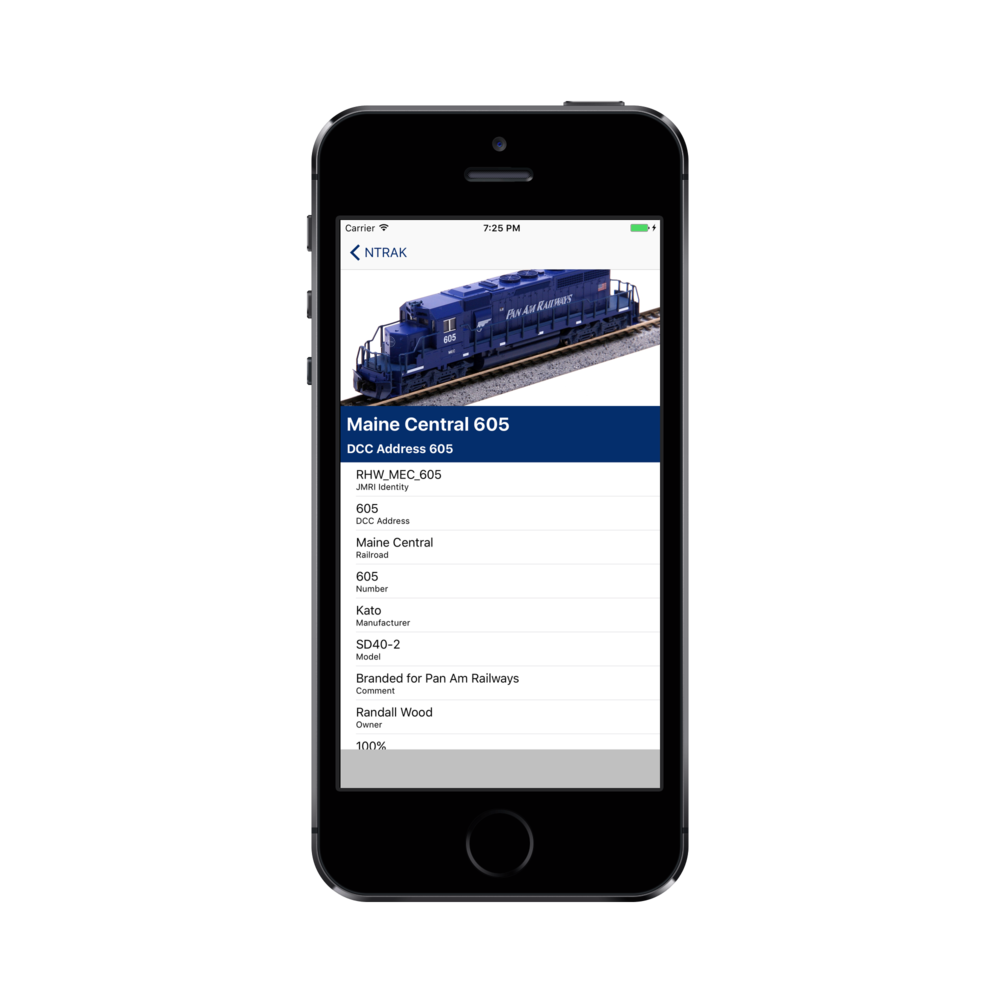

Always have your JMRI rosters with you.
Do you run your trains at a model railroad show or a layout you are visiting? Have you found that, even if they use JMRI for throttles, you aren't sure what address your locomotives have?
Roster Decoder keeps a copy of your JMRI rosters stored in Dropbox on your iPhone, iPad, or iPod. You can always have a complete roster with you for reference.